1. 实验目标与边界
综合实验二要求在用户态实现一个简易文件系统。程序不直接使用真实磁盘，而是由主线程通过 malloc(20M) 申请一段连续内存，把它抽象成一块空白磁盘，再在这块“磁盘”上组织超级块、位图、inode 表和文件数据。
本实现严格按照当前实验任务书完成，不加入往届参考报告中的 100M、目录树、跨终端信号量等扩展项。这样做的好处是目标清晰：把重点放在“文件名如何对应 inode、inode 如何对应数据块、位图如何管理空闲资源、并发时如何保护共享元数据”这条主线上。
2. 模拟磁盘布局
文件系统格式化后，20M 内存被按 1KB 切成 20480 个逻辑盘块。程序把前 31 个块作为元数据区，后续块作为数据区。布局如下：
| 区域 | 块号 | 作用 |
|---|---|---|
| SuperBlock | Block 0 | 记录 magic、磁盘大小、块大小、总块数、各区域起点、空闲 inode 和空闲数据块数量。 |
| Inode Bitmap | Block 1 | 管理 128 个 inode 是否已经被文件占用。 |
| Block Bitmap | Block 2-4 | 覆盖 20480 个盘块的占用状态，元数据块初始化时被标记为已占用。 |
| Inode Table | Block 5-30 | 保存固定数量的 SfsInode，最多支持 128 个文件。 |
| Data Blocks | Block 31 起 | 保存普通文本文件内容，由 block bitmap 分配和回收。 |
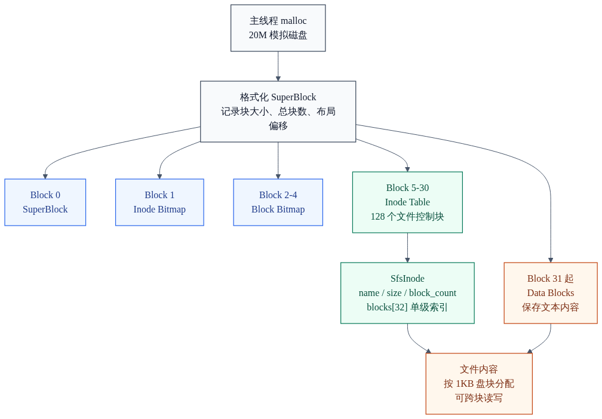
这个设计保留了 EXT2 一类传统文件系统最关键的组织思想：元数据和文件数据分开存放。文件内容不直接由文件名定位，而是通过 inode 中的块索引数组找到真正的数据块。
3. 元数据结构
SuperBlock 是整个文件系统的总目录，负责保存布局参数和资源计数；SfsInode 是单个文件的控制块，负责保存文件名、大小和直接块索引。
typedef struct {
uint32_t magic;
uint32_t disk_size;
uint32_t block_size;
uint32_t total_blocks;
uint32_t max_files;
uint32_t inode_bitmap_start;
uint32_t block_bitmap_start;
uint32_t inode_table_start;
uint32_t inode_table_blocks;
uint32_t data_block_start;
uint32_t free_inodes;
uint32_t free_blocks;
} SuperBlock;
typedef struct {
uint8_t used;
char name[NAME_LEN];
uint32_t size;
uint32_t block_count;
uint32_t blocks[DIRECT_BLOCKS];
} SfsInode;blocks[32] 是单级直接索引。每个元素保存一个 1KB 数据块号，因此单文件最大容量为 32KB。实验要求写入字符串不超过 2KB，本实现额外使用超过 1KB 的样例来证明跨块写入，32 个直接块已经远超实验需要。
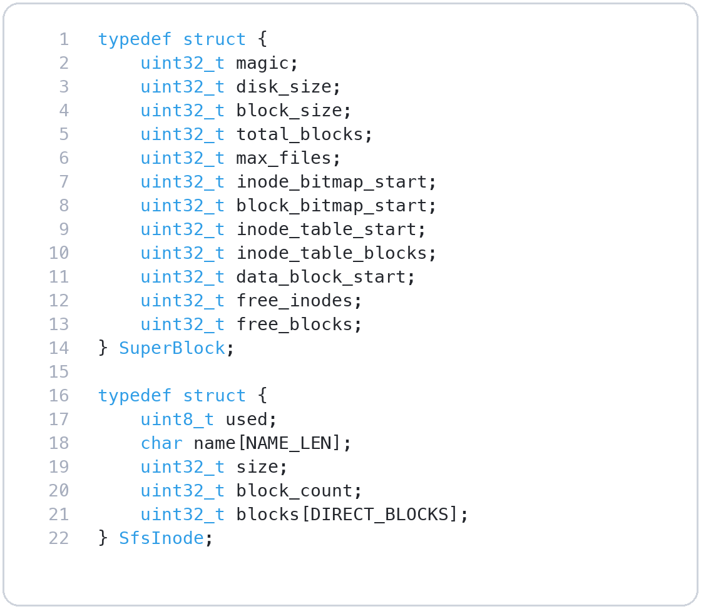
4. 位图分配机制
位图是一种紧凑的资源管理方式。一个 bit 表示一个资源对象是否占用：0 表示空闲，1 表示已分配。inode bitmap 管理文件控制块，block bitmap 管理盘块。
static int bitmap_test(uint8_t *bitmap, uint32_t index) {
return (bitmap[index / 8u] >> (index % 8u)) & 1u;
}
static void bitmap_set(uint8_t *bitmap, uint32_t index) {
bitmap[index / 8u] |= (uint8_t)(1u << (index % 8u));
}
static void bitmap_clear(uint8_t *bitmap, uint32_t index) {
bitmap[index / 8u] &= (uint8_t)~(1u << (index % 8u));
}格式化时，Block 0 到 Block 30 属于元数据块，程序会先把这些块在 block bitmap 中置位。之后分配数据块时从 data_block_start 开始扫描，避免把文件内容写到超级块、位图或 inode 表上。
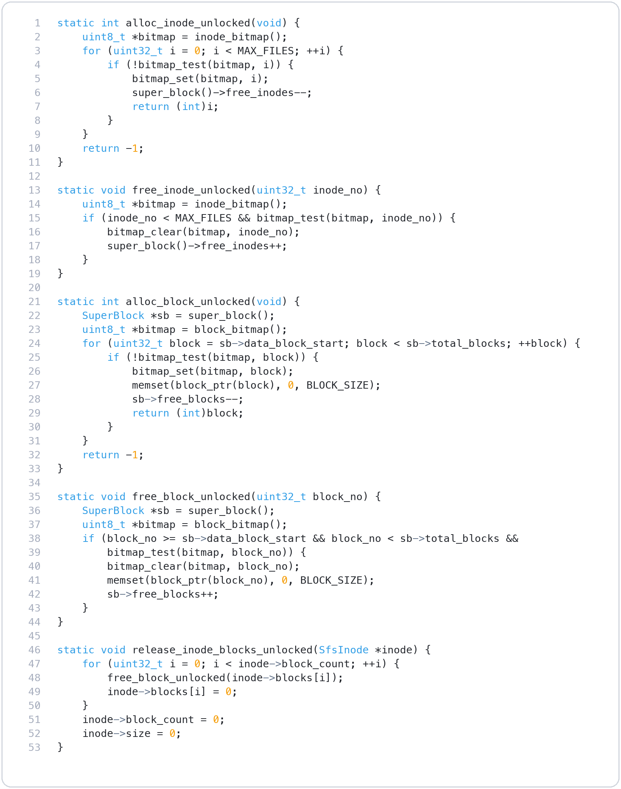
5. 文件接口实现
open：创建或确认文件
sfs_open(name) 先检查文件名合法性：不能为空、不能包含目录分隔符 /、长度必须小于 64。若文件已存在，直接提示并返回成功；若不存在，则从 inode bitmap 中分配一个空闲 inode，清空结构体并写入文件名。
read：按 inode 块索引拼接内容
sfs_read(name, out, out_size) 根据文件名找到 inode，再按照 inode.blocks[i] 顺序复制各个数据块的有效片段。最后手动写入字符串结尾 '\0'，保证读回内容可以作为 C 字符串打印。
rm：释放数据块和 inode
sfs_rm(name) 先释放该 inode 中记录的所有数据块，然后清空 inode 结构体，最后清除 inode bitmap 中对应 bit。运行验证中 manual.txt 被删除后再次读取得到 not found，说明 inode 已经不再被文件表引用。
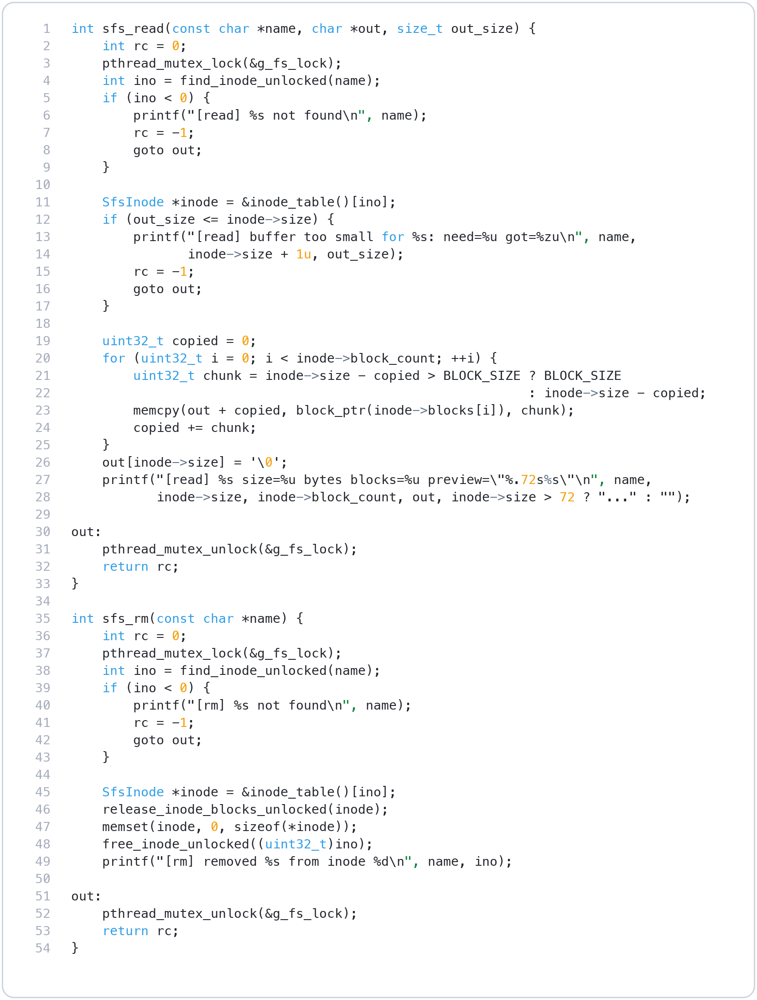
6. 覆盖写与跨块存储
sfs_write 是最容易出错的接口，因为它既要改变文件内容，又要改变文件占用的数据块。程序采用“覆盖写”策略：新的字符串会替换旧内容，而不是追加到末尾。
uint32_t len = (uint32_t)strlen(text);
uint32_t need_blocks = len == 0 ? 0 : ceil_div_u32(len, BLOCK_SIZE);
if (need_blocks > DIRECT_BLOCKS) {
return -1;
}
if (super_block()->free_blocks + inode->block_count < need_blocks) {
return -1;
}
release_inode_blocks_unlocked(inode);
inode->size = len;
inode->block_count = need_blocks;这里有一个关键细节：空间检查使用的是 free_blocks + inode->block_count。原因是覆盖写会先释放旧内容占用的块，所以旧块也可以重新参与新内容的分配。如果不把旧块算入可用空间，一个原本可以覆盖成功的写入可能会被误判为空间不足。
真正写入时，程序按 1KB 为单位分段复制：第 0 段写到第一个数据块，第 1 段写到第二个数据块，以此类推。因此当字符串长度超过 1024 字节时，文件自然跨多个盘块保存，读回时再按 blocks 数组顺序拼接。
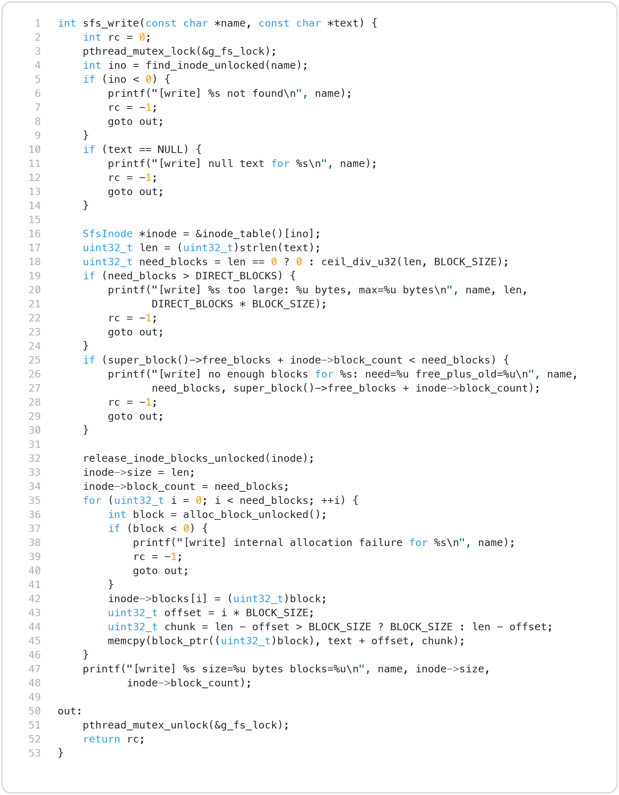
7. pthread 并发验证
主线程只负责申请模拟磁盘、格式化文件系统和启动测试流程。两个子线程共享同一块模拟磁盘，因此它们也共享同一个超级块、inode 表和位图。
static uint8_t *g_disk = NULL;
static pthread_mutex_t g_fs_lock = PTHREAD_MUTEX_INITIALIZER;每个文件系统接口都会在进入临界区时加锁，离开时解锁。这样可以保证两个线程不会同时修改 inode bitmap、block bitmap 或超级块中的空闲计数。
| 线程 | 文件 | 写入内容特征 | 验证点 |
|---|---|---|---|
| thread-1 | t1_alpha.txt、t1_beta.txt | 分别填充 A、B 字符，字符串不同。 | alpha 超过 1KB，占 2 块；beta 不超过 1KB，占 1 块。 |
| thread-2 | t2_alpha.txt、t2_beta.txt | 分别填充 X、Y 字符，和线程 1 明显区分。 | 两个线程最终共保留 4 个文件，资源计数与块占用一致。 |
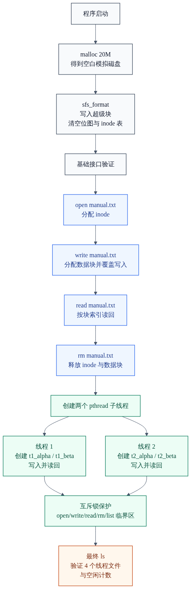
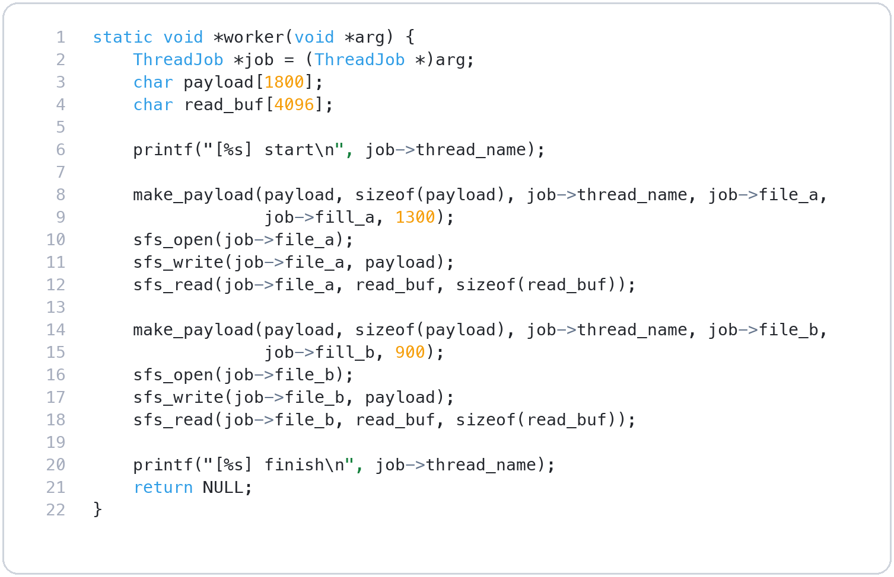
8. 编译运行与结果分析
在 UTM 服务器上部署到 ~/exp2_sfs 后，使用 Makefile 编译并运行：
wenjun@2023150001:~/exp2_sfs$ ./sfs
wenjun@2023150001:~/exp2_sfs$ ./run_demo.sh
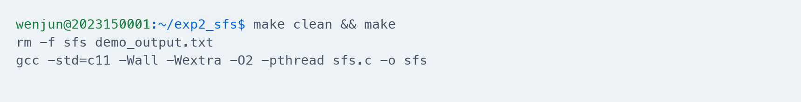
初始化输出中的关键数字可以直接验证布局计算是否正确：
| 输出项 | 实际值 | 含义 |
|---|---|---|
| disk | 20971520 bytes | 20M 模拟磁盘。 |
| block | 1024 bytes | 每个逻辑盘块 1KB。 |
| total_blocks | 20480 | 20971520 / 1024。 |
| data_block_start | 31 | Block 0-30 被元数据占用，Block 31 起保存文件数据。 |
| free_data_blocks | 20449 | 20480 - 31。 |
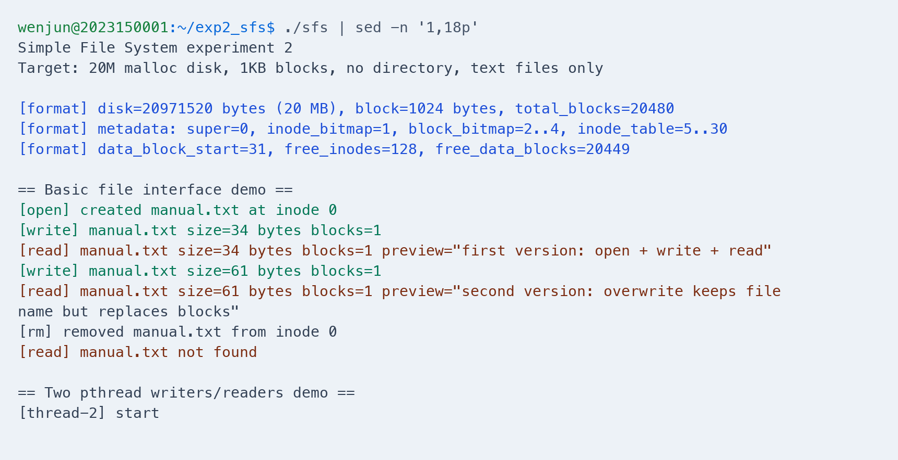
双线程运行结束后，最终文件表中保留 4 个文件。两个 alpha 文件大小为 1393 bytes，均占 2 个数据块；两个 beta 文件大小为 986 bytes，均占 1 个数据块。因此共占用 6 个数据块，最终 free_data_blocks=20443，与 20449 - 6 完全一致。这说明块分配、跨块写入和资源统计是自洽的。
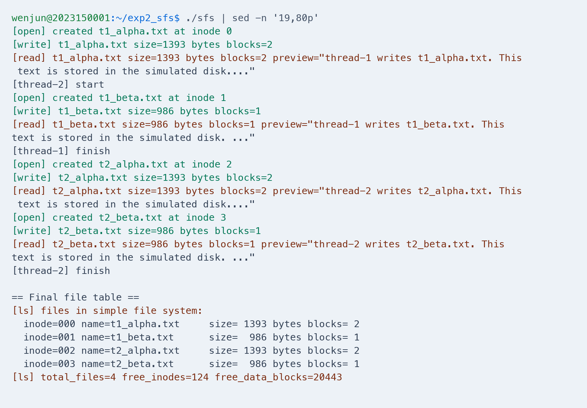
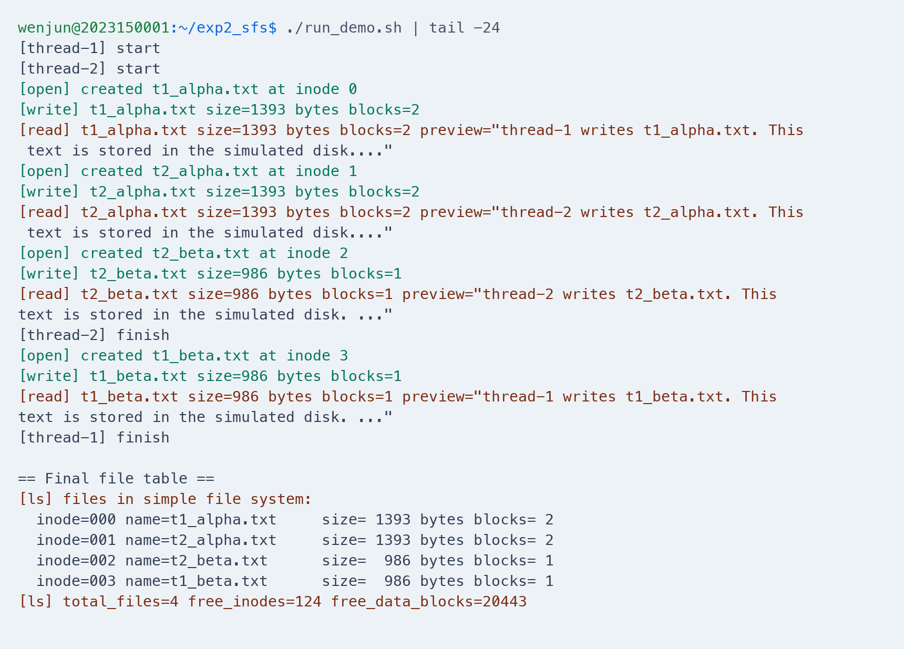
9. 工程文件说明
| 文件 | 说明 |
|---|---|
| sfs.c | 简易文件系统完整源码，包含元数据结构、位图函数、文件接口、线程验证和 main 函数。 |
| Makefile | 统一编译命令：gcc -std=c11 -Wall -Wextra -O2 -pthread sfs.c -o sfs。 |
| run_demo.sh | 复现脚本，一条命令完成 make clean、make 和 ./sfs。 |
| figures/ | 保存 Mermaid 流程图、Ray.so 风格代码图和服务器运行结果图。 |
10. 可改进方向
当前实现面向实验任务，故意保持结构简单。如果继续扩展，可以从以下几个方向逐步增强：
| 方向 | 可以如何扩展 |
|---|---|
| 目录结构 | 新增目录项结构，把文件名从 inode 中拆出，支持路径解析和多级目录。 |
| 更大的文件 | 在直接块之外增加一级间接块或二级间接块，让单文件容量突破 32KB。 |
| 更细粒度并发 | 当前使用全局互斥锁，正确但粒度较粗；后续可以拆分为超级块锁、位图锁和 inode 锁。 |
| 持久化 | 把 20M 内存镜像保存到宿主机文件中，下次启动时从镜像恢复文件系统状态。 |
这些扩展都可以建立在本实验已经实现的超级块、位图和 inode 映射机制之上。换句话说，本实验虽然是简化版，但已经包含了文件系统最核心的骨架。